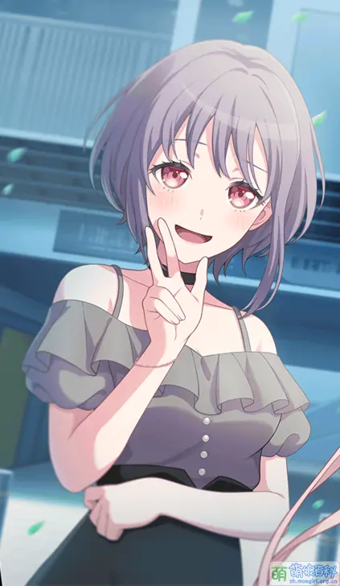

个人简介
Amoris 名取自 Lacus Amoris（爱湖），意指爱与热情。
担当：鼓手
生日：9月2日 星座：处女座
擅长多种打击乐器，节奏感极强，舞台上能量十足，是乐队的节奏中坚。
为人开朗，常负责排练节奏与现场节拍控制。
代表色： #AA4455
CV：米泽茜
祐天寺若麦 / Amoris（アモリス）
Amoris 名取自 Lacus Amoris（爱湖），意指爱与热情。
担当：鼓手
生日：9月2日 星座：处女座
擅长多种打击乐器，节奏感极强，舞台上能量十足，是乐队的节奏中坚。
为人开朗，常负责排练节奏与现场节拍控制。
代表色： #AA4455
CV：米泽茜
祐天寺若麦作为美妆博主兼鼓手，以追求热度与关注为首要目标。加入Ave Mujica后，她因理念不合与祥子屡生冲突，尤其在身份公开问题上采取激进手段，在武道馆演出中强行揭面引发轰动。然而事与愿违，她反而成为乐队中话题度最低的成员。
巡演期间，若麦将睦的舞台失误误认为精湛演技，由此产生自卑心理。当睦因压力衍生出第二人格Mortis后，若麦的挫败感加剧。在福冈演出前，她因不满祥子的处理方式而愤然提出退队，最终导致乐队解散。
单飞后的若麦事业受阻，在与森美奈美的交谈中意识到自己对睦的嫉妒与逃避。在海铃的推动下，她重新参与乐队重组，并在此过程中直面内心。最终在舞台上，她坦然承认对Mortis的复杂情感，克服了长久以来的心魔。
从追逐表象热度的网红，到认清自我价值的鼓手，若麦在Ave Mujica的历程中完成了从外在关注到内心成长的蜕变。

祐天寺若麦的名字由系列构成绫奈由仁子指定，其汉字“若麦”意为“年轻的麦子”，与6月1日麦茶日的生日及家乡熊本县（大麦产区）紧密相关。名字中的“麦”与猫草的联系，也暗合了其频道名中的“にゃ”（猫叫拟声词）元素。
早期因高挑身材与成熟打扮常被误认为年长者，后确认为与LAYER同校的高一学生。角色设定历经调整，从调皮形象最终定为性感风格，其“双巧手”设定则源自声优米泽茜的逆输入。
外貌与高松灯相似，被部分观众视为“灯代餐”；性格与千早爱音的相似点则催生了“未来女儿”的粉丝假说。在二次创作中，因乐队曲目鼓点极快，常被戏称“与鼓搏斗”。
官方仿照剧中“喵姆亲频道”开设了互动栏目，其面具花纹为蝴蝶兰（花语：爱）。巧合的是，角色周边二手价位居团内最低，与剧中“没有热度”的台词形成呼应。
已知若麦拥有母亲、哥哥、姐姐、弟弟、妹妹等众多家人。虽自称嗜辣，但实际耐受度有限。其标志性动作与中国手语“广西”相似，而广西与她的家乡熊本恰为友好地区。